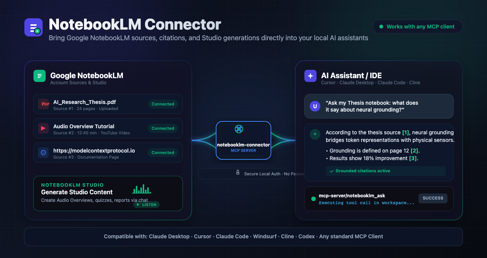

Ask questions answered only from your own sources — with citations. Add sources, generate Audio Overviews, reports and quizzes, all from a normal chat in Claude, Cursor, Codex, and more. No password. Runs entirely on your machine.

Thirteen tools that turn NotebookLM into something your AI assistant can drive directly.
Answers come only from your sources — never made up — and cite the exact passages.
Create notebooks and add URLs, YouTube videos, pasted text, or local files by asking.
Audio Overviews, video, reports, quizzes, flashcards, mind maps, slide decks — then download.
Auto-coverage: it finds gaps in an answer and asks the follow-ups for you, then merges them.
Reuses the Google session already in your browser — Chrome, Brave, Firefox, Comet, and more.
Everything happens on your machine. Nothing is sent anywhere except to NotebookLM itself.
notebooklm-connector is the local MCP server running on your computer. Your IDE communicates with it, and it fetches cookies locally from your browser to safely talk to Google's API.
Cursor, Claude, or Cline
Local MCP Server (Secure Auth)
Your Files & Grounded API
Then say "Connect my NotebookLM" and choose your Google account. Needs Python 3.12 & uv on the machine.
For Claude Code:
For Codex:
It logs in the same way you're already signed in — and nothing leaves your machine.
~/.notebooklm to revoke.